항공산업기사 (2017-09-28 기출문제)
1과목: 항공역학
1. 다음 중 방향 안정성이 양(+)인 경우는? (단, β: 옆비끄럼각, Cn: 요잉모멘트계수이다.)
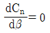
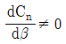
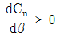
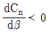
(정답률: 72%)

2. 일반적으로 고정피치 프로펠러의 깃각은 어떤 속도에서 효율이 가장 좋도록 설정하는가?
- 이륙
- 착륙
- 순항
- 상승
(정답률: 88%)
3. 항공기 날개에 관한 설명으로 옳은 것은?
- 날개에서 발생하는 양력은 유도항력을 유발한다.
- 날개의 뒤처짐각은 임계마하수를 낮춘다.
- 날개의 가로세로비는 날개폭을 넓이로 나눈 값이다.
- 양력과 항력은 날개면적의 제곱에 비례한다.
(정답률: 70%)
4. 등가대기속도(Ve 진대기속도(V)에 대한 설명으로 옳은 것은? (단, 밀도비
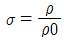
, Pt : 전압, Ps : 정압, ρ0 : 해면고도 밀도, ρ : 현재고도 밀도이다.)(오류 신고가 접수된 문제입니다. 반드시 정답과 해설을 확인하시기 바랍니다.)- 등가대기속도와 진대기속도의 관계는
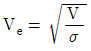
이다. - 등가대기속도는 고도에 따른 밀도변화를 고려한 속도이다.
- 표준대기의 대류권에서 고도가 증가할수록 진대기속도가 등가대기속도보다 느리다.
- 베르누이의 정리를 이용하여 등가대기속도를 나타내면
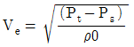
이다.
(정답률: 57%)
5. 조종면의 폭이 2배가 되면 조종력은 어떻게 되어야 하는가?
- 1/2 로 감소
- 변함 없음
- 2배 증가
- 4배 증가
(정답률: 58%)
6. 비행기가 날개를 내리거나 올려 비행기의 전후축(세로축; longitudinal axis)을 중심으로 움직이는 것과 관련된 모멘트는?
- 옆놀이 모멘트(rolling moment)
- 빗놀이 모멘트(yawing moment)
- 키놀이 모멘트(pitching moment)
- 방향 모멘트(directional moment)
(정답률: 77%)
7. 항공기가 등속수평비행을 하기 위한 조건으로 옳은 것은? (단, L 은 양력, D 는 항력, T 는 추력, W 는 항공기 무게이다.)
- L = W, T ＞D
- L = W, T = D
- T = W, L ＞D
- T = W, L = D
(정답률: 83%)
8. 비행기 무게가 1000 kgf 이고 경사각 30˚, 100km/h 의 속도로 정상선회를 하고 있을 때 양력은 약 몇 kgf 인가?
- 500
- 866
- 1155
- 2000
(정답률: 54%)
9. 다음 중 압력계수(Cp)의 정의로 틀린 것은? (단, P∞ : 자유흐름의 정압, p : 임의점의 정압, V : 임의점의 속도, V∞ : 자유흐름의 속도, ρ : 밀도, q∞ : 자유흐름의 동압이다.)
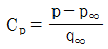
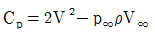
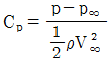
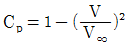
(정답률: 64%)
10. 고정익 항공기 추진에 사용되는 프로펠러에 대한 설명으로 옳은 것은?
- 일반적으로 지상활주 시와 같이 전진비가 낮은 경우에 프로펠러 효율은 최대가 된다.
- 전진비의 증가에 따라 피치각을 증가시켜야한다.
- 로터면에 대한 비틀림각을 블레이드 팁(tip)방향으로 증가하도록 분포시킨다.
- 프로펠러 직경이 큰 경우에는 회전수 변화로 추력을 증감시키는 방법이 일반적으로 사용된다.
(정답률: 54%)
11. 꼬리회전날개(tail rotor)가 필요한 헬리콥터는?
- 단일 회전날개 헬리콥터
- 직렬식 회전날개 헬리콥터
- 병렬식 회전날개 헬리콥터
- 동축 역회전식 회전날개 헬리콥터
(정답률: 85%)
12. 착륙 접지 시 역추력을 발생시키는 비행기에 작용하는 순 감속력에 대한 식은? (단, 추력 : T, 항력 : D, 무게 : W, 양력 : L, 활주로 마찰계수 : 이다.)
- T-D+μ(W-L)
- T+D+μ(W+L)
- T-D+μ(W+L)
- T+D+μ(W-L)
(정답률: 58%)
13. 레이놀즈수(Reynolds number)에 대한 설명으로 틀린 것은?
- 단위는 cm2/s이다.
- 동점성계수에 반비례한다.
- 관성력과 점성력의 비를 나타낸다.
- 임계레이놀즈수에서 천이현상이 일어난다.
(정답률: 84%)
14. 날개골(airfoil)의 정의로 옳은 것은?
- 날개의 단면
- 날개가 굽은 정도
- 최대두께를 연결한 선
- 앞전과 뒷전을 연결한 선
(정답률: 87%)
15. 700 ps 짜리 2 개의 엔진을 장착한 항공기가 대기속도 50 m/s 로 상승비행을 하고 있다면 이 항공기의 상승률은 몇 m/s 인가? (단, 비행기의 중량은 5000 kgf, 항력은 1000 kgf, 프로펠러 효율은 0.8 이다.)
- 3.4
- 5.0
- 6.0
- 6.8
(정답률: 40%)
16. 다음 중 수평스핀(flat spin) 상태에서 받음각의 크기로 가장 적합한 것은?
- 약 5˚
- 10 ~ 20˚
- 약 60˚
- 약 95˚ 이상
(정답률: 62%)
17. 제트 비행기의 최대항속시간에 해당하는 속도는 다음 중 어느 조건에서 이루어지는가?
- 최대 이용추력
- 최소 이용추력
- 최대 필요추력
- 최소 필요추력
(정답률: 64%)
18. 전진하는 회전날개 깃에 작용하는 양력을 헬리콥터 전진속도(V)와 주 회전날개의 회전속도(v)로 옳게 설명한 것은?
- (v-V)2에 비례한다.
- (v+V)2에 비례한다.
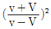
에 비례한다.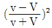
에 비례한다.
(정답률: 70%)
19. 도움날개(aileron) 및 승강키(elevator)의 힌지 모멘트와 이들 조종면을 원하는 위치에 유지하기 위한 조종력과의 관계로 옳은 것은?
- 힌지 모멘트가 크면 조종력도 커야 한다.
- 힌지 모멘트가 커져도 필요한 조종력에는 변화가 없다.
- 힌지 모멘트가 크면 조종력은 작아도 된다.
- 아음속 항공기에서는 힌지모멘트가 커질수록 필요한 조종력은 작아진다.
(정답률: 69%)
20. 국제표준대기의 평균 해발고도에서 특성값을 틀리게 짝지은 것은?
- 온도 : 20 ℃
- 압력 : 1013 hPa
- 밀도 : 1.225 kg/m3
- 중력가속도 : 9.8066m/s2
(정답률: 88%)
2과목: 항공기관
21. 가스터빈엔진의 기본 구성요소가 아닌 것은?
- 압축기
- 터빈
- 연소실
- 감속장치
(정답률: 89%)
22. 가스터빈엔진에 사용되는 연료의 구비조건이 아닌 것은?
- 가격이 저렴할 것
- 어는점이 높을 것
- 인화점이 높을 것
- 연료의 중량당 발열량이 클 것
(정답률: 81%)
23. 오일 양이 매우 작은 상태에서 왕복엔진을 시동하였을 때, 조종사는 어떤 현상을 인지할 수 있는가?
- 정상 작동을 한다.
- 오일압력계기가 0을 지시한다.
- 오일압력계기가 동요(fluctuation)한다.
- 오일압력계기가 높은 압력을 지시한다.
(정답률: 73%)
24. 단(stage) 당 압력비가 1.34 인 9단 축류형 압축기의 출구압력은 약 몇 psi 인가? (단, 압축기 입구압력은 14.7 psi 이다.)
- 177
- 2⑤
- 255
- 276
(정답률: 49%)
25. 이륙 시 정속 프로펠러에서 rpm 과 피치각은 어떤 상태가 되어야 가장 효율적인가?
- 높은 rpm과 작은 피치각
- 높은 rpm과 큰 피치각
- 낮은 rpm과 작은 피치각
- 낮은 rpm과 큰 피치각
(정답률: 62%)
26. 오토사이클의 열효율을 옳게 나타낸 것은? (단, Є : 압축비, k : 비열비이다.)
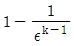
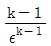
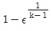
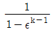
(정답률: 63%)
27. 왕복엔진 부품 중 윤활유에서 열을 가장 많이 흡수하는 부품은?
- 피스톤
- 배기밸브
- 푸시로드
- 프로펠러 감속기어
(정답률: 75%)
28. 왕복엔진에서 마그네토(magneto)의 브레이커어셈블리에서 접촉부분은 일반적으로 어떤 재료로 되어 있는가?
- 은(silver)
- 구리(copper)
- 코발트(Cobalt)
- 백금(Platinum)-이리듐(Iridium) 합금
(정답률: 78%)
29. 가스터빈엔진에서 압축기 실속(compressor stall)이 일어나는 경우는?
- 흡입공기압력이 높을 때
- 유입공기속도가 상대적으로 느릴 때
- 항공기 속도가 터빈 회전속도에 비하여 너무 빠를 때
- 흡입구로 들어오는 램공기(ram-air)의 밀도가 높을 때
(정답률: 66%)
30. 가스터빈엔진 점화계통의 구성품이 아닌 것은?
- 익사이터(exciter)
- 이그나이터(igniter)
- 점화 전선(ignition lead)
- 임펄스 커플링(impulse coupling)
(정답률: 78%)
31. 다음 중 디토네이션(detonation)을 일으키는 요인은?
- 너무 늦은 점화시기
- 낮은 흡입공기 온도
- 너무 낮은 옥탄가의 연료사용
- 너무 높은 옥탄가의 연료사용
(정답률: 66%)
32. 항공기 왕복엔진의 벤튜리 부분에서 실린더흡입 공기량으로부터 생긴 부압에 의해 가솔린을 빨아내고 혼합기를 만드는 방식의 기화기는?
- 부자식 기화기
- 충동식 기화기
- 경계 압력식 기화기
- 압력 분사식 기화기
(정답률: 70%)
33. 다음 중 프로펠러 조속기의 파일롯(pilot) 밸브의 위치를 결정하는데 직접적인 영향을 주는 것은?
- 플라이웨이트
- 엔진오일 압력
- 조종사의 위치
- 펌프오일 압력
(정답률: 76%)
34. 항공기 왕복엔진의 출력증가를 위하여 장착하는 과급기 중 가장 많이 사용되는 형식은?
- 기어식(gear type)
- 베인식(vane type)
- 루츠식(roots type)
- 원심식(centrifugal type)
(정답률: 59%)
35. 엔진의 공기 흡입구에 얼음이 생기는 것을 방지하기 위한 방빙(anti icing) 방법으로 옳은 것은?
- 배기가스를 인렛 스트러트(inlet strut)에 보낸다.
- 압축기 통과 전의 청정한 공기를 인렛(inlet)쪽으로 순환시킨다.
- 압축기의 고온 브리드 공기를 흡입구(intake), 인렛 가이드 베인(inlet guide vane)으로 보낸다.
- 더운 물을 엔진 인렛(inlet) 속으로 분사한다.
(정답률: 85%)
36. 가스터빈엔진의 오일 필터를 손상시키는 힘이 아닌 것은?
- 압력변화로 인한 피로 힘
- 흐름체적으로 인한 압력 힘
- 가열된 오일에 의한 압력 힘
- 열순환(thermal cycling)으로 인한 피로 힘
(정답률: 62%)
37. 가스터빈엔진에서 사용되는 추력증가 장치로만 짝지어진 것은?
- Reverse Thrust, Afterburner
- Afterburner, Water-injection
- Afterburner, Noise suppressor
- Reverse Thrust, Water-injection
(정답률: 74%)
38. 왕복엔진에서 밸브 오버랩의 주된 효과가 아닌 것은?
- 실린더 냉각효과를 높여준다.
- 실린더의 체적 효율을 높여준다.
- 크랭크 축의 마모를 감소시켜 준다.
- 배기가스를 완전히 배출시키는데 유리하다.
(정답률: 69%)
39. 항공기용 왕복엔진으로 사용하는 성형엔진에 대한 설명으로 옳은 것은?
- 단열 성형엔진은 실린더 수가 짝수로 구성되어 있다.
- 성형엔진의 2열은 짝수의 실린더 번호가 부여 된다.
- 성형엔진의 1열은 홀수의 실린더 번호가 부여 된다.
- 14기통 성형엔진의 크랭크 핀은 2개이다.
(정답률: 68%)
40. 비열비(k)에 대한 식으로 옳은 것은? (단, Cp: 정압비열, Cv : 정적비열이다.)
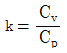
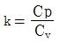
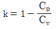
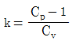
(정답률: 48%)
3과목: 항공기체
41. 구조부재의 일부분에 균열과 같은 결함이 잠재할 수 있다고 가정하고 기체의 안전한 사용 기간을 규정하여 안전성을 확보하는 설계 개념은?
- 정적강도설계
- 안전수명설계
- 손상허용설계
- 페일세이프설계
(정답률: 58%)
42. 부품 번호가 AN 470 AD 3-5 인 리벳에서 “AD"는 무엇을 나타내는가?
- 리벳의 직경이 3/16인치이다.
- 리벳의 길이는 머리를 제외한 길이이다.
- 리벳의 머리모양이 유니버셜 머리이다.
- 리벳의 재질이 알루미늄 합금인 2117 이다.
(정답률: 82%)
43. 다음 중 SAE 규격에 따른 합금강으로 탄소를 가장 많이 함유하고 있는 것은?
- 6150
- 4130
- 2330
- 1025
(정답률: 76%)
44. 항공기 엔진을 장착하거나 보호하기 위한 구조물이 아닌 것은?
- 킬빔
- 나셀
- 포드
- 카울링
(정답률: 79%)
45. 착륙장치(landing gear)에 사용되는 올레오 완충장치(oleo shock absorber)의 충격흡수 원리에 대한 설명으로 옳은 것은?
- 스트럿 실린더(strut cylinder)에 공급되는 공기의 마찰에너지를 이용하여 충격을 흡수한다.
- 헬리컬 스프링(helical spring)이 탄성체의 탄성 변형에너지형식으로 충격을 흡수한다.
- 공기의 압축성효과에 의한 탄성에너지와 작동 유흐름 제한에 따른 에너지 손실에 의해 충격을 흡수한다.
- 리프스프링(leaf spring) 자체가 랜딩 스트럿(landing strut)역할을 하여 충격을 굽힘에너지로 흡수한다.
(정답률: 76%)
46. 접개식 강착장치(retractable landing gear)에서 부주의로 인해 착륙장치가 접히는 것을 방지 하기 위한 안전장치를 나열한 것은?
- down lock, safety pin, up lock
- down lock, up lock, ground lock
- up lock, safety pin, ground lock
- down lock, safety pin, ground lock
(정답률: 74%)
47. 티타늄합금의 성질에 대한 설명으로 옳은 것은?
- 열전도 계수가 크다.
- 불순물이 들어가면 가공 후 자연경화를 일으켜 강도를 좋게 한다.
- 티타늄은 고온에서 산소, 질소, 수소 등과 친화력이 매우 크고, 또한 이러한 가스를 흡수하면 강도가 매우 약해진다.
- 합금원소로써 Cu가 포함되어 있어 취성을 감소시키는 역할을 한다.
(정답률: 70%)
48. 실속속도가 90 mph 인 항공기를 120 mph로 수평 비행 중 조종간을 급히 당겨 최대 양력 계수가 작용하는 상태라면 주날개에 작용하는 하중배수는 약 얼마인가?
- 1.5
- 1.78
- 2.3
- 2.57
(정답률: 63%)
49. 그림과 같이 100 N 의 힘(P)이 작용하는 구조물에서 지점 A 의 반력(R1)은 몇 N 인가? (단, 구조물 ABC는 4분원이다.)
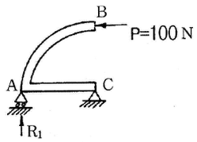
- 100
- 50
- 25
- 0
(정답률: 65%)
50. 항공기에 작용하는 하중에 대한 설명으로 옳은 것은?
- 구조물에 가해지는 힘을 응력이라 한다.
- 하중에는 탑재물의 중량, 공기력, 관성력, 지면반력, 충격력 등이 있다.
- 구조물인 항공기는 하중을 지지하기 위한 외력으로 응력을 가진다.
- 면적 당 작용하는 내력의 크기를 하중이라 한다.
(정답률: 56%)
51. 숏 피닝(shot peening) 작업으로 나타나는 주된 효과는?
- 내부균열 및 변형 방지
- 크롬 도금으로 인한 표면부식 방지
- 표면강도 증가와 스트레스부식 방지
- 광택감소로 인한 표면마찰증가와 내열성 증가
(정답률: 58%)
52. 표와 같은 항공기의 기본 자기무게에 대한 무게중심(c.g)의 위치는 몇 cm 인가?
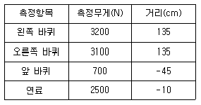
- 176.4
- 187.6
- 194.4
- 201.6
(정답률: 54%)
53. 리브너트(rivnut)를 사용하는 방법으로 옳은 것은?
- 금속면에 우포를 씌울 때 사용한다.
- 두꺼운 날개 표피에 리브를 붙일 때 사용한다.
- 한쪽면에서만 작업이 가능한 제빙장치 등을 설치할 때 사용한다.
- 기관마운트와 같은 중량물을 구조물에 부착할때 사용한다.
(정답률: 72%)
54. [보기]에서 설명하는 작업의 명칭은?
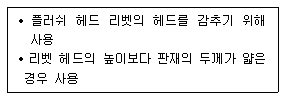
- 디버링(deburing)
- 딤플링(dimpling)
- 클램핑(clamping)
- 카운터 싱킹(counter sinking)
(정답률: 61%)
55. 항공기 구조의 특정 위치를 쉽게 알 수 있도록 위치를 표시하는 것 중 기준 수평면과 일정거리를 두며 평행한 선은?(오류 신고가 접수된 문제입니다. 반드시 정답과 해설을 확인하시기 바랍니다.)
- 기준선(datum line)
- 버턱선(buttock line)
- 동체 수위선(body water line)
- 동체 위치선(body station line)
(정답률: 59%)
56. 항공기 기체 판재에 적용한 릴리프 홀(relief hole)의 주된 목적은?
- 무게 감소
- 강도 증가
- 좌굴 방지
- 응력 집중 방지
(정답률: 82%)
57. FRCM(Fiber Reinforced Composite Material)의 모재(matrix) 중 사용온도 범위가 가장 큰 것은?
- FRC(Fiber Reinforced Ceramic)
- FRP(Fiber Reinforced Plastic)
- FRM(Fiber Reinforced Metallics)
- C/C 복합재 (Carbon-Carbon Composite Material)
(정답률: 56%)
58. 토크렌치의 길이는 10 인치이고, 5 인치의 연장공구를 사용하여 작업을 하여 토크렌치의 지시값이 300 lb 이라면 실제 너트에 가해진 토크는 몇 in-lb 인가?
- 400
- 450
- 500
- 550
(정답률: 68%)
59. 리벳작업을 위한 구멍뚫기 작업에 대한 설명으로 옳은 것은?
- 드릴작업 전 리밍작업을 한다.
- 드릴작업 후 구멍의 버(burr)는 되도록 보존하도록 한다.
- 구멍은 리벳 직경보다 약간 작게 한다.
- 리밍작업 시 회전방향을 일정하게 하여 가공한다.
(정답률: 73%)
60. 항공기 조종장치의 종류가 아닌 것은?
- 동력 조종장치(power control system)
- 매뉴얼 조종장치(manual control system)
- 부스터 조종장치(booster control system)
- 수압식 조종장치(water pressure control system)
(정답률: 71%)
4과목: 항공장비
61. 전원회로에서 전압계(voltmeter)와 전류계(ammeter)를 부하로 연결하는 방법으로 옳은 것은?
- 전압계와 전류계 모두 직렬연결 한다.
- 전압계와 전류계 모두 병렬연결 한다.
- 전압계는 병렬, 전류계는 직렬연결 한다.
- 전압계는 직렬, 전류계는 병렬연결 한다.
(정답률: 69%)
62. VOR국은 전파를 이용하여 방위 정보를 항공기에 송신하는데 이때 VOR국에서 관찰하는 항공기의 방위는?
- 진방위
- 상대방위
- 자방위
- 기수방위
(정답률: 56%)
63. 교류발전기의 정격이 115V, 1kVA, 역률이 0.866이라면 무효전력(reactive power)은 얼마인가? (단, 역률(power factor) 0.866 은 cos30°에 해당한다.)
- 500 W
- 866 W
- 500 Var
- 866 Var
(정답률: 48%)
64. 열을 받게 되면 스테인리스강으로 된 케이스가 늘어나게 되므로, 금속 스트럿이 펴지면서 접촉점이 연결되어 회로를 형성시키는 화재경고장치는?
- 열전쌍식 화재경고장치
- 광전지식 화재경고장치
- 열 스위치식 화재경고장치
- 저항 루프형 화재경고장치
(정답률: 59%)
65. 왕복엔진의 실린더에 흡입되는 공기압을 아네로이드와 다이어프램을 사용하여 절대 압력으로측정하는 계기는?
- 윤활유 압력계
- 제빙 압력계
- 증기압식 압력계
- 흡입 압력계
(정답률: 67%)
66. 솔레노이드 코일의 자계세기를 조정하기 위한 요소가 아닌 것은?
- 철심의 투자율
- 전자석의 코일 수
- 도체를 흐르는 전류
- 솔레노이드 코일의 작동 시간
(정답률: 71%)
67. 공기순환 공기 조화계통(Air cycle airconditioning)에 대한 설명으로 틀린 것은?
- 냉매를 사용하여 공기를 냉각시킨다.
- 수분분리기는 압축공기로부터 수분을 제거하기 위해 사용된다.
- 항공기 공기압계통에 공기를 공급한다.
- 항공기 객실에 압력을 가하기 위하여 엔진 추출 공기를 사용한다.
(정답률: 53%)
68. 수평의(vertical gyro)는 항공기에서 어떤 축의 자세를 감지하는가?
- 기수 방위
- 롤 및 피치
- 롤 및 기수방위
- 피치 및 기수 방위
(정답률: 60%)
69. VHF 무전기의 교신가능 거리에 대한 설명으로 옳은 것은?
- 장애물이 있을 때에는 100 km 이내로 제한된다.
- 송신 출력을 높여도 가시거리 이내로 제한된다.
- 항공기 운항속도를 늦추면 더 먼 거리까지 교신이 가능하다.
- 안테나 성능향상으로 장애물과 상관없이 100km 이상 교신이 가능하다.
(정답률: 71%)
70. 압력조절기에서 킥인(kick-in)과 킥아웃(kick-out)상태는 어떤 밸브의 상호작용으로 하는가?
- 체크밸브와 릴리프밸브
- 체크밸브와 바이패스밸브
- 흐름조절기와 릴리프밸브
- 흐름평형기와 바이패스밸브
(정답률: 64%)
71. 항공기 속도에서 등가대기속도에서 대기밀도를 보정한 속도는?
- IAS
- CAS
- TAS
- EAS
(정답률: 59%)
72. 그림에서 압력계에 나타나는 압력은 몇 kgf/cm2인가? (단, 단면적은 A측 2cm2, B측 10cm2이며, 작용하는 힘은 A측 50 kgf, B측 250 kgf 이다.)
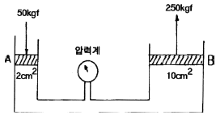
- 25
- 50
- 100
- 250
(정답률: 61%)
73. 자이로의 섭동 각속도를 나타낸 것으로 옳은 것은? (단, M : 외부력에 의한 모멘트, L : 각 운동량이다.)
- M/L
- L/M
- L-M
- M×L
(정답률: 61%)
74. 축전지 터미널(battery teminal)에 부식을 방지하기 위한 방법으로 가장 적합한 것은?(오류 신고가 접수된 문제입니다. 반드시 정답과 해설을 확인하시기 바랍니다.)
- 납땜을 한다.
- 증류수로 씻어낸다.
- 페인트로 얇은 막을 만들어 준다.
- 그리스(grease)로 얇은 막을 만들어 준다.
(정답률: 79%)
75. 교류발전기의 병렬운전 시 고려해야 할 사항이 아닌 것은?
- 위상
- 전류
- 전압
- 주파수
(정답률: 47%)
76. 압축공기 제빙부츠 계통의 팽창순서를 제어하는 것은?
- 제빙장치 구조
- 분배밸브
- 흡입 안전밸브
- 진공펌프
(정답률: 77%)
77. 항공기가 산악 또는 지면과 충돌하는 것을 방지하는 장치는?
- Air traffic control system
- Inertial navigation system
- Distance measuring equipment
- Ground proximity warning system
(정답률: 83%)
78. 공압계통에 대한 설명으로 옳은 것은?
- 유압과 비교하여 큰 힘을 얻을 수 없다.
- 공압계통은 리저버(reservoir)가 필요하다.
- 공기압은 비압축성이라 그대로의 힘이 잘 전달된다.
- 공압계통은 리턴라인(return line)이 필요하다.
(정답률: 55%)
79. 자기나침반(magnetic compass)의 자차수정시기가 아닌 것은?
- 엔진교환 작업 후 수행한다.
- 지시에 이상이 있다고 의심이 갈 때 수행한다.
- 철재 기체 구조재의 대수리 작업 후 수행한다.
- 기체의 구조부분을 검사할 때 항상 수행한다.
(정답률: 61%)
80. 항공기가 야간에 불시착 했을 때 기내∙외를 밝혀주는 비상용조명(emergency light)은 최소 몇 분간 조명하여야 하는가?
- 10분
- 30분
- 60분
- 90분
(정답률: 55%)